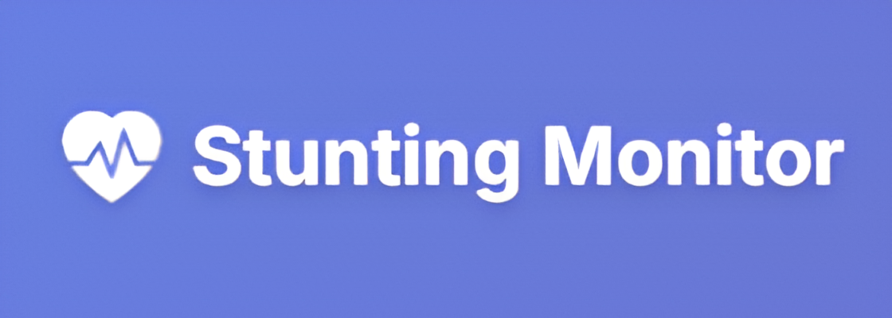
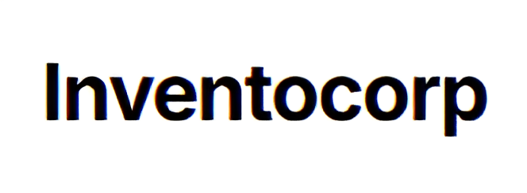

Proyek Terbaru
Setiap proyek yang saya kerjakan adalah hasil kolaborasi antara ide, teknologi, dan tujuan bisnis. Berikut beberapa karya yang paling saya banggakan:
Rasa Publik
Aplikasi analisis sentimen masyarakat pada platform X dengan menggunakan Streamlit (Python). Dengan berbagai fitur dari preprocessing, labeling otomatis maupun manual hingga tahap analisis sentimen menggunakan SVM dan Naive Bayes.
Stunting Monitor
Dibangun menggunakan Flask (Python) Aplikasi ini merupakan sistem informasi yang dapat memprediksi anak yang mengalami resiko stunting dengan menggunakan algoritma KNN (K-Nearest Neighbors)
InventoCorp
Aplikasi manajemen inventori berbasis Laravel + Filament, dilengkapi fitur CRUD, pengelolaan kategori & stok barang, serta kontrol akses berbasis role (admin & member). Dibuat untuk membantu bisnis memantau persediaan dengan lebih efisien.

mdbahrulilmi
Mau lihat lebih banyak kreasiku? Klik untuk membuka GitHub dan jelajahi project lainnya yang sedang kukerjakan!